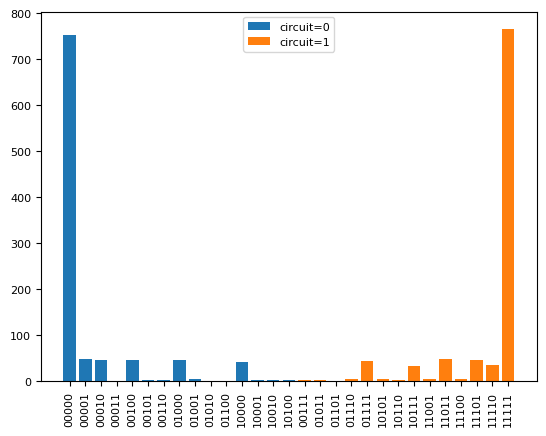

How to make your own benchmark?#
This notebook shows an example of how to use the benchmark defition to write a new benchmark class.
Here we make a simple benchmark that creates two circuits, one that prepares all the qubits in the ground state and another one that prepares them in the excited state.
# Define a new benchmark here.
import xarray as xr
from iqm.benchmarks.benchmark_definition import (
Benchmark,
BenchmarkConfigurationBase,
add_counts_to_dataset,
BenchmarkAnalysisResult,
)
from iqm.benchmarks.utils import (
xrvariable_to_counts,
)
from iqm.qiskit_iqm.iqm_provider import IQMBackend, IQMFakeBackend
from qiskit import QuantumCircuit, transpile
import matplotlib.pyplot as plt
def generate_readout_test_circuit(backend, N_qubits):
circuits=[]
qb_to_measure = range(N_qubits)
qc = QuantumCircuit(N_qubits,N_qubits)
for qubit in range(N_qubits):
pass
qc.barrier()
qc.measure(qb_to_measure,qb_to_measure)
circuits.append(qc)
qc = QuantumCircuit(N_qubits,N_qubits)
for qubit in range(N_qubits):
qc.x(qubit)
qc.barrier()
qc.measure(qb_to_measure,qb_to_measure)
circuits.append(qc)
qc_transpiled = transpile(circuits, backend, optimization_level=0)
return qc_transpiled
def plot_histogram(
dataset: xr.Dataset,
):
fig = plt.figure()
for ii in range(50):
try:
plt.bar(dataset[f"test_state_{ii}"], dataset[f"test_counts_{ii}"], label=f"circuit={ii}")
except:
break
plt.xticks(rotation=90)
plt.legend()
plt.close()
return fig
def add_all_meta_to_dataset(self, dataset: xr.Dataset) -> None:
"""Adds all configuration metadata and circuits to the dataset variable.
Args:
dataset: The xarray dataset
"""
# Add here any custom metadata you want to add to the dataset attributes:
# dataset.attrs["session_timestamp"] = self.session_timestamp
# Automatically store the configuration
for key, value in self.configuration:
if key == "benchmark": # Avoid saving the class object
dataset.attrs[key] = value.name
else:
dataset.attrs[key] = value
def readout_analysis(run):
dataset = run.dataset
# You can optionally convert the dataset variable to counts format using the utils function:
n_circuits = len(dataset)
all_counts = xrvariable_to_counts(dataset, "test", n_circuits)
plots={}
plots["histogram"] = plot_histogram(dataset)
return BenchmarkAnalysisResult(dataset=dataset, plots=plots)
class ReadoutTest(Benchmark):
analysis_function = staticmethod(readout_analysis)
@classmethod
def name(cls) -> str:
"""Returns the name of the benchmark."""
return "readout_test"
def __init__(self, backend: IQMBackend | IQMFakeBackend | str, configuration: "TestConfiguration"):
super().__init__(backend, configuration)
def execute(self, backend: IQMBackend | IQMFakeBackend) -> xr.Dataset:
"""
Executes the benchmark.
"""
dataset = xr.Dataset()
circuits = generate_readout_test_circuit(backend, self.configuration.N_qubits)
job = backend.run(circuits, shots=self.shots)
identifier="test" # How to name your circuits in the dataset to distinguish them, for i.e. analysis of different layouts.
dataset,_ = add_counts_to_dataset(job.result().get_counts(), identifier, dataset)
add_all_meta_to_dataset(self, dataset)
return dataset
class TestConfiguration(BenchmarkConfigurationBase):
"""Test case cofiguration, add any arguments here that are not already defined in the base class.
Attributes:
benchmark: ReadoutTest benchmark class.
N_qubits: Number of qubits to prepare in the circuits.
"""
benchmark: type[Benchmark] = ReadoutTest
N_qubits: int = 5
from iqm.qiskit_iqm import IQMProvider
from iqm.qiskit_iqm.fake_backends.fake_apollo import IQMFakeApollo
import os
# Real backend
# token = ""
# os.environ["IQM_TOKEN"] = token
# quantum_computer = "garnet" # provide actual quantum computer name
# iqm_server_url = "https://resonance.iqm.tech/" # provide actual IQM server URL
# os.environ["IQM_SERVER_URL"] = iqm_server_url
#
# provider = IQMProvider(iqm_server_url, quantum_computer=quantum_computer)
# backend = provider.get_backend()
#Fake backend
backend = IQMFakeApollo()
benchmark = ReadoutTest(backend, TestConfiguration(N_qubits=5, shots=1000))
run_result = benchmark.run()
2026-02-24 14:24:39,203 - iqm.benchmarks.logging_config - INFO - Adding counts to dataset
run_result.dataset
<xarray.Dataset> Size: 868B
Dimensions: (test_state_0: 15, test_state_1: 16)
Coordinates:
* test_state_0 (test_state_0) <U5 300B '00000' '00001' ... '10010' '10100'
* test_state_1 (test_state_1) <U5 320B '00111' '01011' ... '11110' '11111'
Data variables:
test_counts_0 (test_state_0) int64 120B 753 49 46 1 46 3 2 ... 1 1 41 2 2 2
test_counts_1 (test_state_1) int64 128B 2 2 1 4 44 1 1 ... 5 48 4 47 36 765
Attributes:
benchmark: <bound method ReadoutTest.name of <class '__main...
shots: 1000
max_gates_per_batch: None
max_circuits_per_batch: None
routing_method: sabre
physical_layout: fixed
use_dd: False
dd_strategy: None
active_reset_cycles: None
N_qubits: 5result = benchmark.analyze()
result.plot_all()
2026-02-24 14:24:39,460 - matplotlib.category - INFO - Using categorical units to plot a list of strings that are all parsable as floats or dates. If these strings should be plotted as numbers, cast to the appropriate data type before plotting.
2026-02-24 14:24:39,463 - matplotlib.category - INFO - Using categorical units to plot a list of strings that are all parsable as floats or dates. If these strings should be plotted as numbers, cast to the appropriate data type before plotting.
2026-02-24 14:24:39,474 - matplotlib.category - INFO - Using categorical units to plot a list of strings that are all parsable as floats or dates. If these strings should be plotted as numbers, cast to the appropriate data type before plotting.
